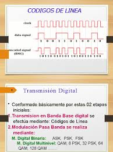

Los códigos RZ, NRZ, AMI y Manchester son ampliamente utilizados. Tanenbaum destaca su importancia histórica.
Cada código define una forma distinta de representar bits. Algunos priorizan sincronización y otros eficiencia. Stallings explica que su selección depende del sistema.

En conclusión, cada código cumple una función específica.